Introduction to Deep Learning
Matt Klawonn
Demonstrations
- Image Classification
- Sentiment Analysis
- Visual Question Answering
Image Classification
Sentiment Analysis
Visual Question Answering
Deep Learning
- What is it?
- Why use it?
- How to use it?
- Where to start?
- Coding Demo
Talk Overview
- What is it?
- Why use it?
- How to use it?
- Where to start?
- Coding Demo
The Machine Learning Task
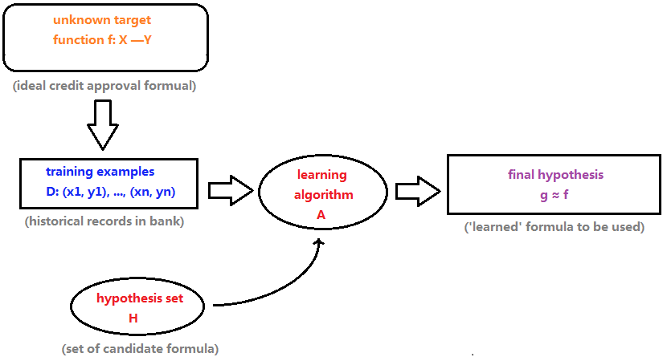Image courtesy of here
Traditional Approach

Image courtesy of here
Deep Learning Approach
Image courtesy of here
Neural Networks
Neural networks are machine learning models which rely on "neurons," or "units" to compute a function. They learn to approximate a function by intelligently updating the weights of connections between neurons.

Illustration of backpropagation. Image courtesy of here
Talk Overview
- What is it?
- Why use it?
- How to use it?
- Where to start?
- Coding Demo
Artificial Neural Networks
A Brief Incomplete History
- 1961: Multilayer Perceptron
- 1985: Backpropagation
- 1988: Convolutional Neural Networks
- 1998: LeNet
- 2006: Layerwise pre-training
Why It Didn't Work
Overfitting
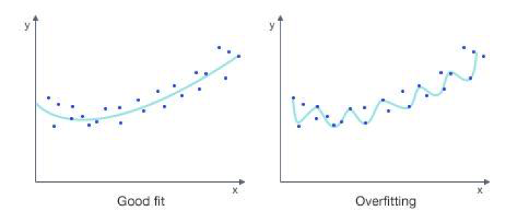Example of overfitting. Image courtesy of here
Why It Didn't Work
Theoretical Training Difficulties
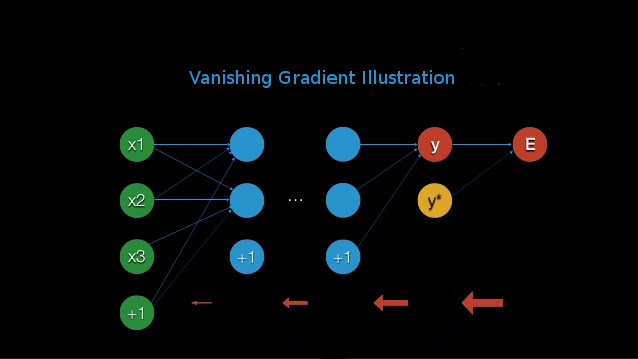The vanishing gradient problem is one training difficulty.
Vanishing gradient illustration. Image courtesy of here
Why It Didn't Work
Practical Training Difficulties
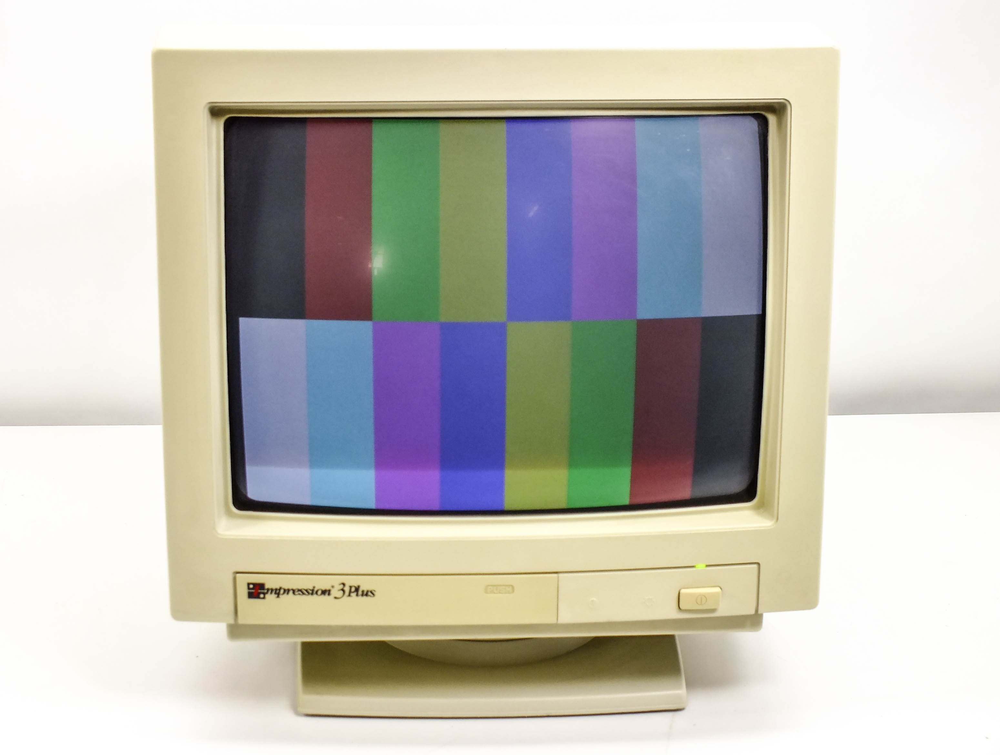Old machines were insufficient to realistically train deep nets.
Image courtesy of here
What Changed?
- Improved Regularization
- Tricks to Preserve Signals
- Big Data
- Beefy Machines
Why Deep Architectures?
Deep Learning and You
- Lots of data?
- Big machines?
- Limited problem insight?
- Deep learning is for you
Complaints
There's very little in the way of deep learning theory beyond the basics. As such, practitioners tend to rely on a number of "tricks."
"Because it works"
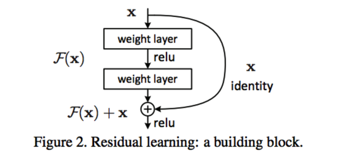
Residual network proposed by Microsoft. Image courtesy of [2]
Does it actually work?
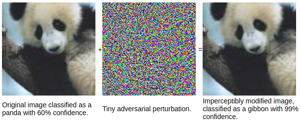
Example of adversarial problem. Image courtesy of here
Does it actually work?
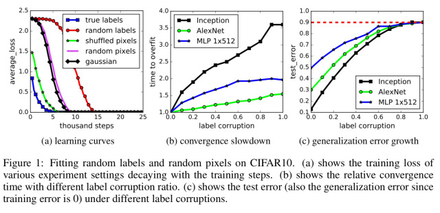
Example of overfitting. Image courtesy of [5]
Talk Overview
- What is it?
- Why use it?
- How to use it?
- Where to start?
- Coding Demo
Early Stopping
Stop when validation loss stops decreasing.
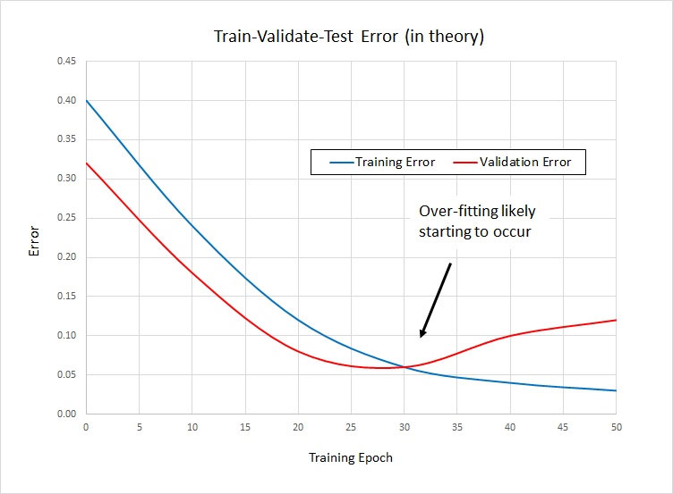
Early stopping illustration. Image courtesy of here
Hyperparameter Choices
Neural Networks are used in conjunction with non-convex losses, so hyperparameters matter!
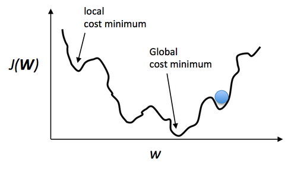
Example non-convex cost function. Image courtesy of here
Data Augmentation and Preprocessing
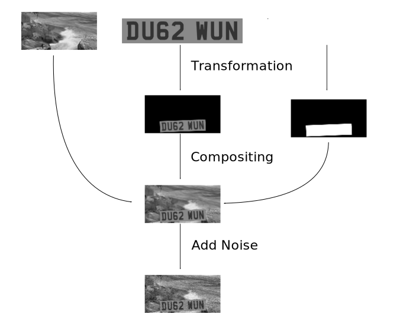
Example of generating image for data augmentation. Image courtesy of here
Regularization

Dropout illustration. Image courtesy of here
Reuse Models
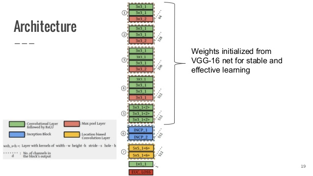
Example of model reuse. Image courtesy of here
Talk Overview
- What is it?
- Why use it?
- How to use it?
- Where to start?
- Coding Demo
Lots of Frameworks
Tutorials
Data
Talk Overview
- What is it?
- Why use it?
- How to use it?
- Where to start?
- Coding Demo
Keras MNIST CNN
We will classify data from MNIST (handwritten digits) using Keras. To do this, we will construct a convolutional neural network.
All code from keras examples.
Machinery Needed: CNNs
Convolutional Neural Networks exploit spatially-local correlation in images to automatically extract features relevant to the task at hand. Let's look at an example.

LeNet CNN architecture. Image courtesy of here
Animation courtesy of here
Preparing The Data
from keras.datasets import mnist
from keras.utils import np_utils
(X_train, y_train), (X_test, y_test) = mnist.load_data()
X_train = X_train.astype('float32')
X_test = X_test.astype('float32')
X_train /= 255
X_test /=255
Y_train = np_utils.to_categorical(y_train, nb_classes)
Y_test = np_utils.to_categorical(y_test, nb_classes)
Creating The Model
from keras.models import Sequential
from keras.layers import Dense, Dropout, Activation, Flatten
from keras.layers import Convolution2D, MaxPooling2D
kernel_size = (3,3)
model = Sequential()
model.add(Convolution2D(nb_filters, kernel_size[0], kernel_size[1],
border_mode = 'valid',
input_shape=input_shape))
model.add(Activation('relu'))
model.add(Convolution2D(nb_filters, kernel_size[0], kernel_size[1]))
model.add(Activation('relu'))
model.add(MaxPooling2D(pool_size=pool_size))
model.add(Dropout(0.25))
model.add(Flatten())
model.add(Dense(128))
model.add(Activation('relu'))
model.add(Dropout(0.5))
model.add(Dense(nb_classes))
model.add(Activation('softmax'))
Training
model.compile(loss='categorical_crossentropy',
optimizer='adadelta',
metrics=['accuracy'])
model.fit(X_train, Y_train, batch_size=batch_size, nb_epoch=nb_epoch,
verbose=1, validation_data=(X_test, Y_test))
Testing
score = model.evaluate(X_test, Y_test, verbose=0)
Further Reading and References
Citations
1) Bengio, Y. and LeCun, Y. (2007). Scaling learning algorithms towards AI. In Large Scale Kernel Machines.
2) He, Kaiming, et al. "Deep residual learning for image recognition." arXiv preprint arXiv:1512.03385 (2015).